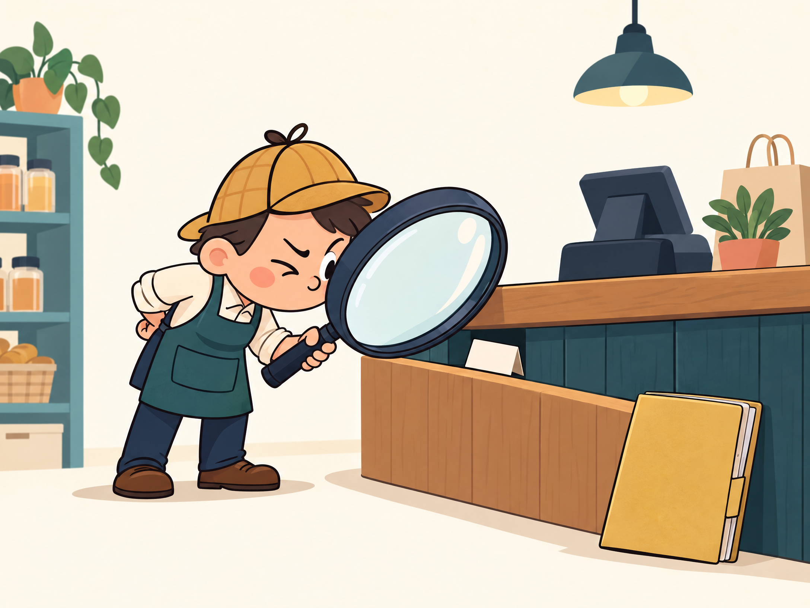
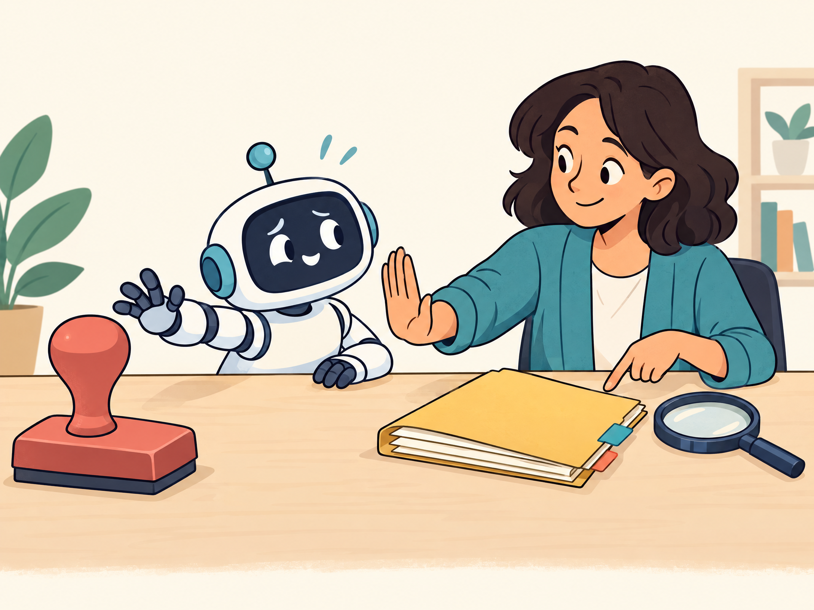

Look for observable evidence
Record what was seen, where it came from, and when it was checked. Missing or uncertain evidence stays visible.
More traceable evidence. A working scaffold for organizing public storefront observations and questions for qualified review—not a compliance verdict, legal opinion, or promise of platform approval.
No real store has been graded. This draft is not ready for live decisions.
The pack is designed to help a human reviewer keep observations bounded, evidence traceable, and open questions visible.

Record what was seen, where it came from, and when it was checked. Missing or uncertain evidence stays visible.

Legal interpretation, policy ambiguity, and live changes belong with qualified human review—not an automatic stamp.
Do not infer a pass from silence, a badge, or one screenshot. Check current official sources before relying on any future finding.
These are prompts for review, not statements of current platform rules or legal requirements.
Public pages and payment-flow observations to verify against current official sources.
Open Layer A checklist →Prompts for storefront, advertising, commerce, and data-use evidence.
Open Layer B checklist →Unresolved product-access and disclosure decisions; no paywall is configured.
Open Layer C checklist →Jurisdiction-dependent consumer, privacy, product, accessibility, and sector questions.
Open Layer D checklist →The draft uses four descriptive outcomes. Each needs evidence and human judgment; none is a certification.
Repository name, visibility, license, first store to review, paid-access choice, and approval of the draft remain unresolved. A license file is intentionally not included.
Support is optional and separate from the review tool. The supporter links may lead to third-party pages with their own terms and content restrictions. The age prompt below is self-attestation only; this static draft does not verify identity, age, or location.
Supporter options are hidden until you confirm you are at least 18 (or the age of majority where you live).
Review the amount, billing frequency, and cancellation terms shown by PayPal before subscribing. Those terms are set in the linked PayPal plan.
The optional Ko-fi support button is also shown after you open this 18+ section.
These are independent third-party support options. Check each provider’s terms before joining.